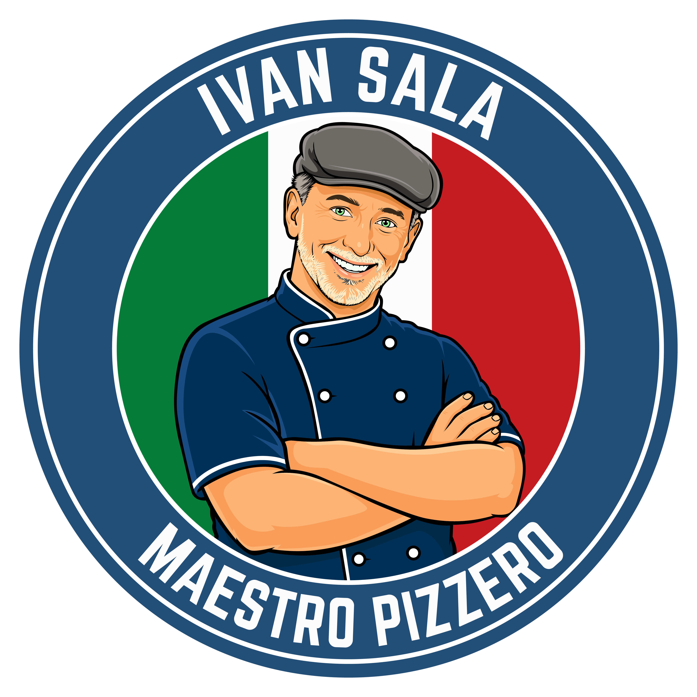

Hoy te merecés
un Misù.
Auténtico tiramisù italiano. Hecho para llevar, difícil de compartir.
Attenzione: crea dipendenza.
Fatto con amore
¿qué MISÙ sos hoy?
Elegí tu favorito. Nosotros hacemos el resto.
No necesitás una ocasión.
Aunque terminar el lunes también cuenta.
Pssst… no todo es tiramisù.
Conocé el Fiocco di Neve.
₡1.900
El secreto suave, relleno y cubierto de azúcar que Nápoles no quería compartir.
Un postre napolitano inspirado en el famoso Fiocco di Neve original de Ciro Poppella, en Nápoles.
De Nápoles a Costa Rica, en una cajita.
Misù nace de la familia detrás de Antica Pizzeria Napoletana y de una obsesión muy italiana: hacer las cosas simples, pero hacerlas bien. Recetas inspiradas en la tradición, preparadas en Costa Rica y listas para acompañarte donde querás.
Creado por el maestro pizzero detrás de Antica Pizzeria Napoletana

Un marchio di Antica Pizzeria Napoletana, Costa Rica.
Tu Misù está más cerca de lo que creés.
Seguí el antojo
{{ instagramAt }}La última cucharada
nunca se comparte.
Elegí tu punto de venta y pedí tu favorito.